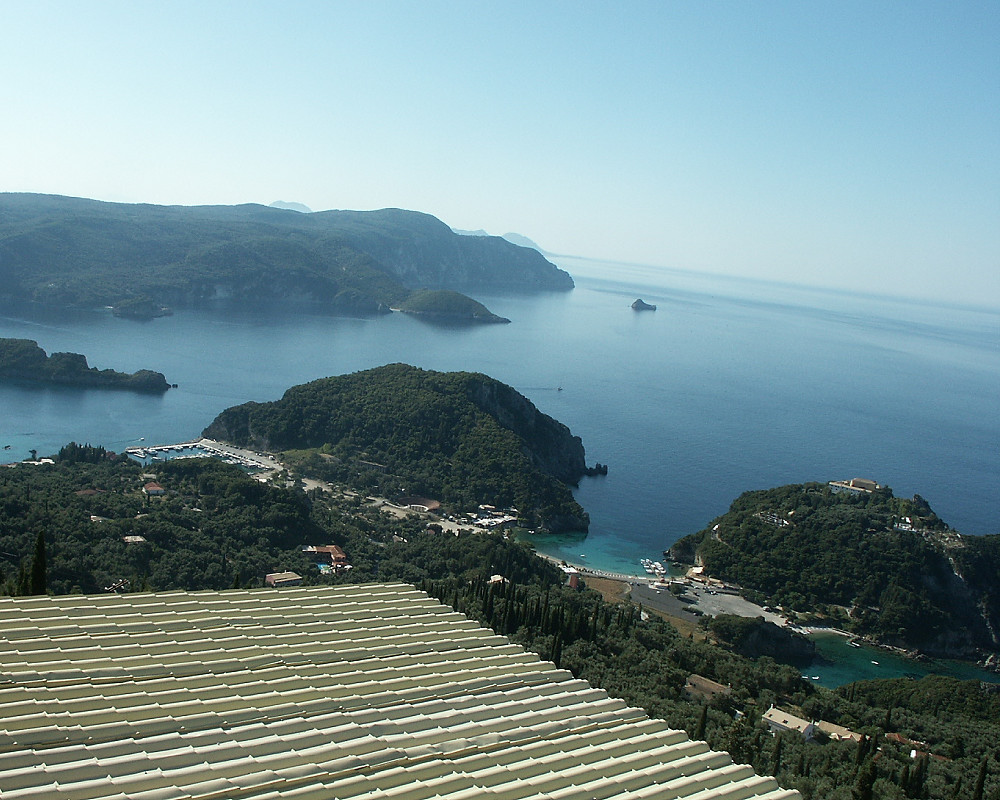

Johnnie and Oberta Baker's Photo Album Previous Gallery Next
|

Archaeological excavations have proved that the island was inhabited since the Palaeolithic Era (7th- 4th centuries B.C.E) and that during this period Corfu was a very important commercial center for the Phoenicians that inhabited this island. |